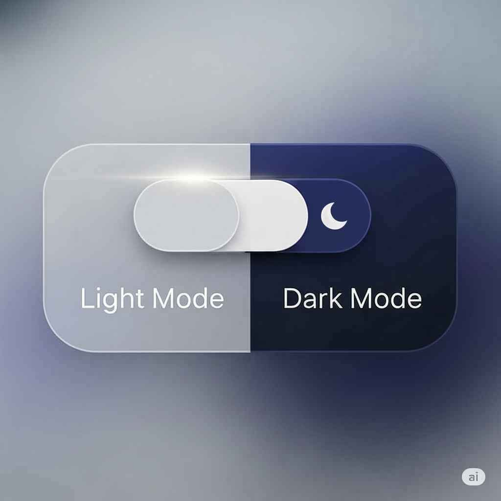

From Dark to Light: A Practical Guide to Creating a Theme Switcher
Published on June 29, 2025 • 5 min read
Offering a dark mode has become almost a standard in modern applications and websites. Beyond aesthetic preference, it can reduce eye strain in low-light environments. Giving the user the power to choose between a light and a dark theme isn't just a detail; it's a sign of care for the user experience (UX).
Step 1: The HTML Structure (The Button)
Everything starts with a simple button in our HTML. Inside it, we'll place two SVG icons: a sun (to represent the light theme) and a moon (for the dark theme). Using JavaScript, we will toggle which of the two is visible.
<!-- Light/Dark Theme Button -->
<button id="theme-toggle-button">
<svg id="theme-icon-sun" class="w-6 h-6 hidden">... (sun icon code) ...</svg>
<svg id="theme-icon-moon" class="w-6 h-6">... (moon icon code) ...</svg>
</button>
Step 2: The Styling Logic with CSS
The strategy here is simple and powerful. Our site is dark by default. We will create a special class, which we'll call .light-mode. When this class is added to the <html> tag by JavaScript, a set of CSS rules will be activated to override the default colors and apply the light theme.
/* We define our color variables for the light mode */
.light-mode {
--bg-color: #f3f4f6;
--text-color: #1f2937;
--accent-color: #7c3aed;
/* ... etc ... */
}
/* Then, we apply these variables */
.light-mode body {
background-color: var(--bg-color);
color: var(--text-color);
}
.light-mode .project-card {
background-color: #e5e7eb;
}
/* And so on for all other elements... */
Step 3: The JavaScript (The Brains of the Operation)
Now, let's move on to the JavaScript, which will orchestrate everything. Our script will have three responsibilities:
- Check if the user already has a saved theme.
- Listen for a click on the button to switch the theme.
- Save the new choice.
3.1. Saving the Preference with localStorage
So that the site 'remembers' the user's choice on their next visit, we use a browser tool called localStorage. It's like a small notepad where we can store simple information, like the string 'light' or 'dark'.
/**
* Sets up the theme switcher (light/dark mode) and saves the preference.
*/
function setupThemeToggle() {
const themeToggleButton = document.getElementById('theme-toggle-button');
const sunIcon = document.getElementById('theme-icon-sun');
const moonIcon = document.getElementById('theme-icon-moon');
const root = document.documentElement; // The tag
// Function to apply the theme
const applyTheme = (theme) => {
if (theme === 'light') {
root.classList.add('light-mode');
sunIcon.classList.remove('hidden');
moonIcon.classList.add('hidden');
} else {
root.classList.remove('light-mode');
sunIcon.classList.add('hidden');
moonIcon.classList.remove('hidden');
}
// Saves the choice to localStorage
localStorage.setItem('theme', theme);
};
// Listener for the button click
themeToggleButton.addEventListener('click', () => {
const currentTheme = localStorage.getItem('theme') || 'dark';
const newTheme = currentTheme === 'dark' ? 'light' : 'dark';
applyTheme(newTheme);
});
// Initial logic: checks for a saved preference or the system preference
const savedTheme = localStorage.getItem('theme');
const prefersDark = window.matchMedia('(prefers-color-scheme: dark)').matches;
if (savedTheme) {
applyTheme(savedTheme);
} else if (prefersDark) {
applyTheme('dark');
} else {
applyTheme('light');
}
}
// Don't forget to call the function when the page loads!
document.addEventListener('DOMContentLoaded', setupThemeToggle);
Conclusion
And that's it! With a simple HTML structure, well-organized CSS with variables, and a smart JavaScript function, we've created a complete, professional theme switcher that significantly improves the user experience.
This is a great example of how we can use the front-end to create features that are not only beautiful but also useful and user-centered. I hope this guide helps you implement this functionality in your own projects!